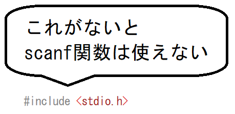
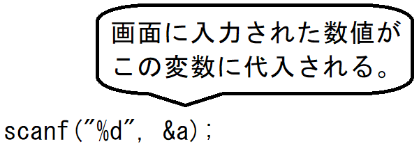

scanf関数とはアプリケーションに対して、キーボードなどから文字や数値を入力し、入力されたデータを変数に代入してくれる関数です。 この関数を「scanf」(すきゃんえふ)といいます。 サンプルとして、次のプログラムを入力し実行までしてみてください。
数値を入力してEnterキーを押してください。 そうすると『入力された数値は「○○」ですね。』と表示されます。 scanf関数の使い方scanf関数を使うには、「#include <stdio.h>」を記述します。これはprintf関数でも記述するので、大体は記述すると思います。  scanfのカッコの中にある文字列には、変数の値を表示するときと同様に「 %d」となっています。そしてその後ろに、カンマを挟み、「 &a」と&(アンパサンド)をつけて書かれています。こうすることによって、入力された数値が、変数aに代入されます。  また、scanf関数で入力可能データは、変数の型に依存します。 そのため、「全角文字」や「２文字以上の文字列」については特殊な記載が必要となります。 これについてはのちに解説します。 複数の数値をまとめて入力値を２つ入力する場合は、次のようにします。
|
|
当Webサイトに記載されている内容は、筆者が独自に調査・研究した内容をまとめています。 そのため、記載されている内容によって、 いかなる損害が発生したとしても、筆者は責任を負いかねますのでご了承ください。 |